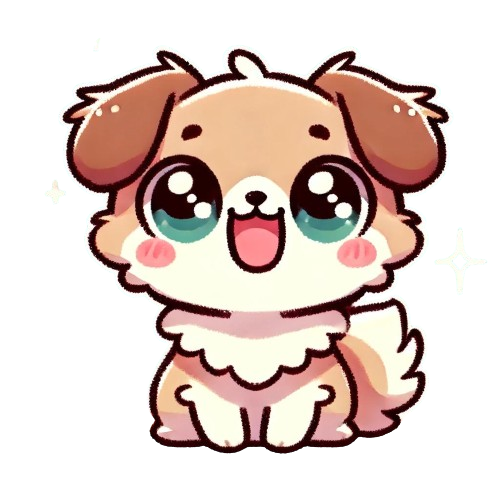

Tervetuloa tunnetaitopelien pariin!
Täällä pääset tutustumaan erilaisiin tunteisiin ja opettelemaan, miten niitä voi käsitellä. Tunteiden ymmärtäminen on tärkeää, koska se auttaa meitä tuntemaan iloa, olemaan ystävällisiä ja toimimaan hyvin yhdessä muiden kanssa. Tunteet myös kertovat meille, mitkä asiat ovat meille tärkeitä. Jokaisella tunteella on oma pelinsä, jossa opit uusia asioita hauskalla tavalla.
Tässä voit tutustua sivuilla oleviin pelihahmoihin:
Ilo
tekstiä
Suru

Suru-sivulla voit oppia vinkkejä surullisten tunteiden käsittelyyn surusymbolit pelin avulla. Peli koostuu yhdeksästä symbolista joiden joukosta sinun tehtävänäsi on poimia suruun liittyvät symbolit, jokaisesta oikein valitusta symbolista opit keinoja surun käsittelyyn.
Pelko

Pelko-sivulla pääset kohtaamaan ja ymmärtämään pelon tunteen turvallisessa ympäristössä. Haasteesi on ratkaista jännittävä arvoitus, joka vaatii rohkeutta ja keskittymistä. Jokainen oikea vastaus vie sinut askeleen lähemmäksi pelon merkin ansaitsemista. Uskallatko ottaa haasteen vastaan?
Hämmennys
Hämmennys-sivulla kohtaat vauhdikkaan haasteen, jossa nopeus ja tarkkaavaisuus ovat avainasemassa. Tehtävänäsi on reagoida nopeasti ja tehdä oikeita valintoja sekunnin murto-osissa. Jokainen onnistuminen vie sinut lähemmäksi hämmennyksen merkin ansaitsemista. Kuinka nopeasti pystyt toimimaan hämmennyksen keskellä?
Inho

tässä tekstiä
Viha

tässä tekstiä